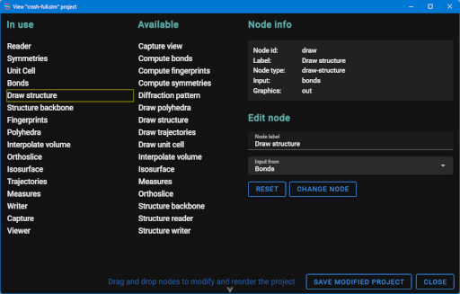

The loaded project structure could be seen and changed using the File → Project editor menu entry. This entry opens the Project editor in its own window depicted below.

The window title contains the filename of the currently loaded project or the “default project” mark.
The leftmost column, labelled “In use”, list all the nodes in the current loaded project.
The second column, labelled “Available”, list all the nodes provided by the application.
Nodes in the “In use” column could be dragged up and down to change the display order in the application.
If entries are dragged to the “Available” column, they are removed from the application.
If entries are dragged from the “Available” column, they are added to the application. In the name a string in parenthesis mark these created nodes.
Clicking nodes in the “In use” column mark them as selected with a border. Clicking on a selected node deselects it. The selected node show its data in the rightmost column labelled “Node info”. The title and the id of the node from which the data arrives to this node could be edited in the “Edit node" section. Changes are accepted with the “Change node” button. To return to the project original content for this node push “Reset”.
At the end, “Save modified project” asks for a project filename (.stm), save here the modified project and load it in the application. Closing the window with the “Close” button loses the changes.